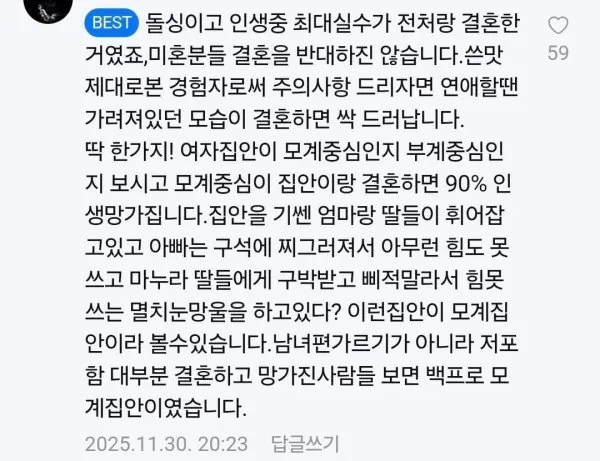

돌싱남이 미혼남에게 하는 경고
댓글
밸런스가 중요하지
자녀 없으면 그나마 잡히는데 생기면 편 가르기 들어가서 ㄹㅇ 힘듬
이게 맞다
그나마 장인어른이 조금 더 센 집에 가서 다행이군...
딸이 아빠한테 하는 태도랑 남편한테 하는 태도가 같음.
반대로 아들은 엄마한테 하는 태도랑 아내한테 하는 태도가 같음.
엄마 말 ㅈㄴ 안듣는데...
ㅈㄹ ㄴ
아들은 좀 아닐 수 있는 게... 엄마한테 잘하는 거 자체가 와이프와의 갈등의 시작일 수 있음. 남자는 고부 사이에 중재하고 누구편을 드냐의 시련이 자주 오는데. 엄마랑 너무 가까우면 마마보이 소리 듣는 거임. 적당히 거리 있는 게 나음
이게 맛다고 한다
개맞말이니, 결혼 생각있으면 장인이 어떤 대접받고 있는지 꼭 봐야한다.
장인이 죽었다면 부활시켜야하다니...결혼이 이래서 빡시구나
가장 화목한 집은 아빠가 낮이밤져 하는 집안
겉으로는 낮에 가장의 기를 세워주지만 밤에는 얄짤없이 돈 벌어오는 생체딜도행
근데 호구남자가 흐린눈하고 결혼하면 바뀌겠지~ 하고 고추에 지배되서 결혼했다가 후회하는거지 ㅋㅋ
반대아니냐 ㅋㅋㅋㅋ
암탉이 울면 망한다는 이유가 괜히있는게 아님 옛 어른 들 말 틀린게 하나없다
모계집안 딸내미 ㄴ들은 그냥 와인식초만드셈 ㅇㅇ
친척이 모계집안인데 남편이 교수인데 집에선 고양이 밑에 서열임 ㅋㅋ 설날 추석 제사도 남편혼자 지방가서 지내는동안 딸+아내는 유럽여행다님 그것도 매년...
근데 남편분의 자식에 대한 애착이커서 이혼은 안함...
심지어 재작년에 아내가 동창이랑 바람났는데도 한번 봐줌.. 내가 봐도 불쌍해서 눈물나는 인생임.
모계집에 장가간 남자 개병신되기딱좋음 최악이 모계집 딸3이런집ㅋㅋㅋ
우리집이 모계집 + 딸3인데...다 결혼 잘해서 잘 살고 있다...
다행이라고볼수있네 행복하게잘살길
딸들은 행복하겠지
저거진짜맞다 딸만있는집은 무조건걸러라 그리고
주제파악못하는년들이많어
근데 대부분이 모계중심 아님?
아님
내 집안 아버지가 다 관리하심
친구보면 진짜 가족분위기 잘봐야 됨
시아버지가 너무 자상하시길래 믿고 결혼했는데 시어머니를 놓쳤다는
우리 장인어른은 아직도 돈을 잘버셔서그런가 집안의 중심임 ㄹㅇ 그래서 그런가 와이프도 나 가장대우잘해줌 맞는말인듯
코런갑다 함
중요한건 부모를 잘봐야함
부모도 버린년인지 잘보셈
보고 자란게 그건데 어쩌겠냐 고생하고 온 남편 잡도리하는 애미년 보고 자랐으니 지도 그래도 된다고 배운거지 애미년보면 자식이 어떨지 보이는거지
모계집안 조심글..
져주는게 이기는거라메
내 주변도르, 남편은 아내한테 져주고, 아내는 남편을 존중하는 가정이 오래 간다
모계인게 이해되는 상황이 있음. 아빠쪽이 바람/두집살림/도박/보증/감옥/모든 돈의 출처가 어머니 등등의 사유가 있다면. 근데 이 대부분의 조건에 안맞는다? 도망쳐라. 이악물고 도망쳐라
이건 조건에 맞아도 도망쳐야지
모계가 이해되는경우는 엄마가 돈 더벌고 엄마가 관리하는 집안인경우 하나임
모계 집안도 케바케인 게 남편이 무리한 사업으로 집안 살림 말아먹고 심지어 불륜까지 저질러서 지팔지꼰 경우 생각나네
딸부자집 인데 장인어릉이 존나 쎄서 ㅋㅋ
내가 이십대때 일하던 가게 부부개 모계집안 이었는데 사업은 주로 부인이 하고 남자는 샷다맨 딸둘
남자사장님 나랑 술마시면 자긴 집에서 개새끼보다 서열이 낫다고 ㅋㅋㅋㅋ 근데 그걸 또 잘 받아들이심. 열심히 샷다맨 하시고 딸바라지 잘하시고 나룸 화목해 보였어.
남자가 특별한 직업이나 능력없어도 부인 사업돕고 친구드루좋아해서 벤츠끌고 술마시러다니고 나쁘지 않은 인생임 ㅋ
내친구도 비슷해. 여자가 회사 사장인데 애는 또 셋이나 낳음. 친구가 애 케어 똑부러지게 잘 잘하고 뒷바라지 하면서 화목하게 잘살더라. 아내가 남자 평품옷 입혀서 친구들이랑 놀고 오라고 카드 쥐어주고 그래.
친구 엄마가 동네 유명한 쌈닭이었음, 지금은 남편한테 껌뻑 죽음
친구 아버지는 동네 사람들이 얼굴도 잘 모르는 상태고
그 때가 초1이었는데 친구도 아버지도 엄마한테 완전 지배당한 상태
학교마치고 친구가 나랑같이 집 가다 넘어져서 이마에 피가 주륵주륵 나고 지나가던 아주머니가 지혈까지 해주시는데 당시 8살 짜리가 못 울고 사색이 됨 ㅋㅋㅋ 옷 지저분해져서 엄마한테 혼난다고 울상임 그정도로 잡혀살았음 ㅠㅠ
어느날 보니 친구 아버지가 친구 어머니 완전 굽히게 만드심 초등 저학년 때 친했고 중, 고딩때는 학교 달라서 동네 마주치면 인사만 하곤 해서 몰랐는데
친구 아버지가 참다 폭발해서 일가족 다 죽자고 제대로 준비하고 실행하려다 직전에 멈췄는데 그 과정에서 이웃중에 원수였던 사람 죽이는 것도 있었나봄 ㅋㅋ 친구 엄마가 사정사정 해서 말리고 빌었다고함
우리 엄마 말로는 그런일이 있던게 나랑 친구 중학교때 쯤이었은데 암튼 그 세상 얌전 하시던 분이 눈에서 번쩍전쩍 불이 나왔다고 함 ㅎㅎ
모계든 뭐든 아득히 상식을 넘은 심연을 보여주면 장르 바뀔 수는 있음 ㅋㅋ 단 지금 시대엔 바로 구속당하고 위자료 폭탄 맞을 수는 있음
일단 멍청한게 주제도 모르고 꼬꼬댁 거리는 것들은 다 걸러야 함. 미국에선 크레이지 아이 라고 눈깔 돌아있는 쌈닭 혹은 멍청한여자를 가르키는말이 있음. 1. 무식한데 잘난척하는 여자. 2. 감정쓰레기통으로 쓰는 여자. 3. 지 이득(하고싶은것)되는것만 해야되는 여자. 3가지만 걸러도 인생 잘 살 수 있음. 이런 여자가 엄마 혹은 할머니다 ? 빨리 인연끊어야함. 뒤늦게 온갖 정병다 얻고 인생 망했다가 다시 살아나는 중인 사람으로써 경험담임.
한국에 모계집안이 아닌 집이 있나?
퐁퐁세대 말고는 대부분 부계지..
근데 모계든 부계든 부모 한쪽이 힘이 쌔면 집안은 파탄남